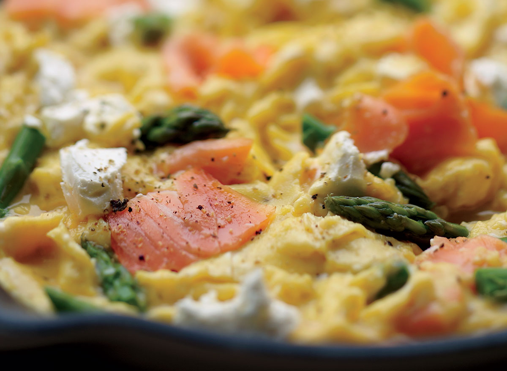

Scrambled eggs

Source: Mitch Mandel and Thomas MacDonald
Scrambled eggs are a classic breakfast dish made by whisking eggs and cooking them in a pan until they form soft, fluffy curds. They can be made plain with just a pinch of salt and pepper, or customized with a variety of fillings such as cheese, herbs, or vegetables. The texture and flavor of scrambled eggs can be adjusted to personal taste by varying the cooking time and temperature. Proper technique involves continuously stirring or folding the eggs as they cook to create a creamy and tender texture. Scrambled eggs are a versatile dish that can be enjoyed on their own or as a component of a larger breakfast spread.
Ingredients:
- 2 eggs
- 1 tablespoon butter
- Salt and pepper, to taste
- Optional: chopped fresh herbs or grated cheese for garnish
Instructions:
- Crack the eggs into a bowl and beat them with a fork or whisk until the yolks and whites are fully combined.
- Heat a non-stick skillet over medium heat and add the butter. Let it melt and coat the bottom of the pan.
- Pour the beaten eggs into the skillet and let them cook for a few seconds until they begin to set around the edges.
- Use a spatula to gently stir the eggs, scraping the bottom of the pan to form curds. Continue stirring until the eggs
are fully cooked but still soft and moist.
- Season with salt and pepper to taste, and garnish with chopped fresh herbs or grated cheese if desired.
- Serve immediately while the eggs are hot and fluffy. Enjoy!
See other recipes:
This guide was based on the content from 'https://www.eatthis.com/easiest-recipes/'.
Home